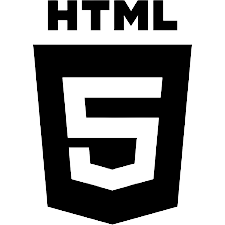
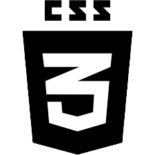

- -Projetos-
- Blackjack ♢♤♧♡
- Tecnologias usadas:
- E-commerce
- Tecnologias usadas:  
Um sistema de BlackJack (21), onde usuário e máquina disputam quem tem mais pontos na soma de cartas, mas sem passar o limite de 21.

Um sistema interno de loja online, com páginas de controle de estoque, vendas, página de funcionários, adição de produtos e home.